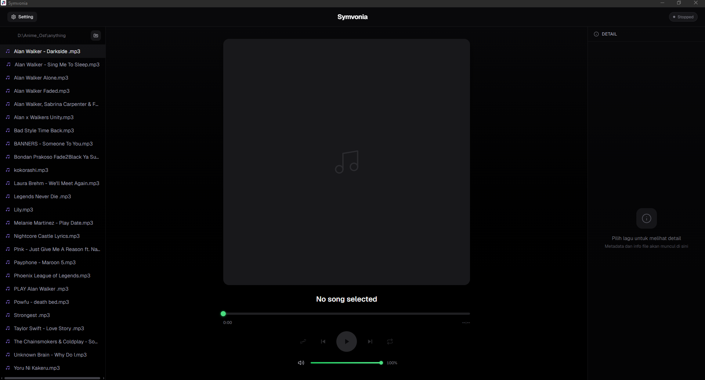
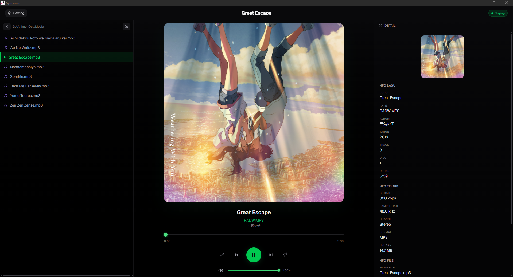
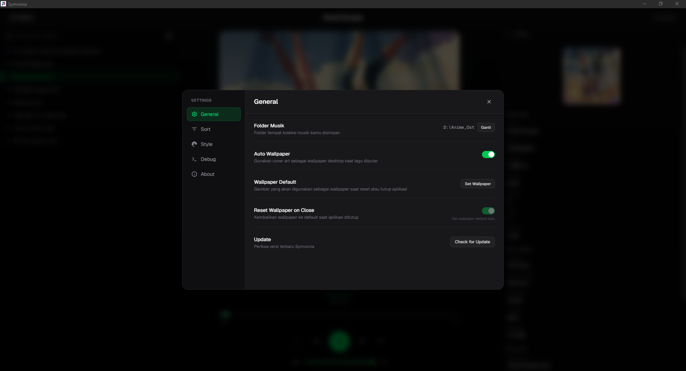

Desktop music player yang mengubah wallpaper desktop kamu mengikuti musik.
Auto-wallpaper dari cover art, metadata lengkap, dan UI modern dengan 14 warna aksen.

Symvonia menggabungkan pemutaran musik, metadata audio, dan wallpaper desktop otomatis dalam antarmuka yang bersih dan modern.
Play, Pause, Next, Previous dengan Shuffle dan Repeat (Off / All / One). Auto-advance ke lagu berikutnya dan playlist tetap berjalan meskipun kamu navigasi ke folder lain.
Cover art dari file audio otomatis menjadi wallpaper desktop. Bisa diaktifkan/dimatikan, dan kamu bisa memilih gambar default sendiri untuk dipakai saat lagu tanpa cover.
Pilih folder musik mana saja di komputer. Masuk ke subfolder, kembali ke induk, filter format file, dan urutkan berdasarkan nama, tanggal, ukuran, atau tipe file.
Info lagu (judul, artis, album, genre, tahun, track, disc), info teknis (bitrate, sample rate, channel, durasi), info file, dan komentar tertampil di panel detail.
Pilih dari 14 preset warna (Green, Blue, Purple, Pink, Red, Orange, Yellow, Teal, Cyan, Indigo, Rose, Lime, Amber, Emerald) atau buat warna custom dengan color picker.
Symvonia bisa memeriksa dan menginstall update secara otomatis langsung dari aplikasi. Cukup klik Check for Update di Settings.
Kontrol musik tanpa menyentuh mouse. Semua shortcut berfungsi selama kamu tidak sedang mengetik di input field.
| Tombol | Fungsi |
|---|---|
| Space | Play / Pause |
| N | Lagu berikutnya |
| P | Lagu sebelumnya |
| → | Volume naik (+5%) |
| ← | Volume turun (-5%) |
| F12 | Buka DevTools (debug) |
Semua preferensi disimpan otomatis. Tidak perlu setting ulang setiap kali buka aplikasi.
Konfigurasi utama aplikasi
Urutan file dan folder di sidebar
Kustomisasi tampilan antarmuka
Log viewer untuk troubleshooting
Pilih warna aksen yang paling cocok dengan selera kamu. Semua elemen UI — tombol, border, text, shadow, glow — akan menyesuaikan otomatis.
Dibangun dengan teknologi modern untuk performa desktop native.
Aplikasi akan menampilkan halaman welcome dengan tombol besar untuk memilih folder musik kamu.
Klik tombol Pilih Folder Musik dan arahkan ke folder tempat kamu menyimpan koleksi audio. Semua file audio (.mp3, .flac, .ogg, dll) akan muncul di sidebar.
Double-click file audio dari daftar di sidebar kiri. Lagu akan diputar dan metadata (cover art, judul, artis, dll) akan tertampil di panel utama.
Cover art dari lagu yang sedang diputar otomatis menjadi wallpaper desktop kamu. Ubah wallpaper kapan saja via Settings.
Tampilan antarmuka Symvonia dengan berbagai fitur dan kustomisasi.


Symvonia tersedia untuk Windows. Download installer dan jalankan — tidak perlu konfigurasi tambahan.